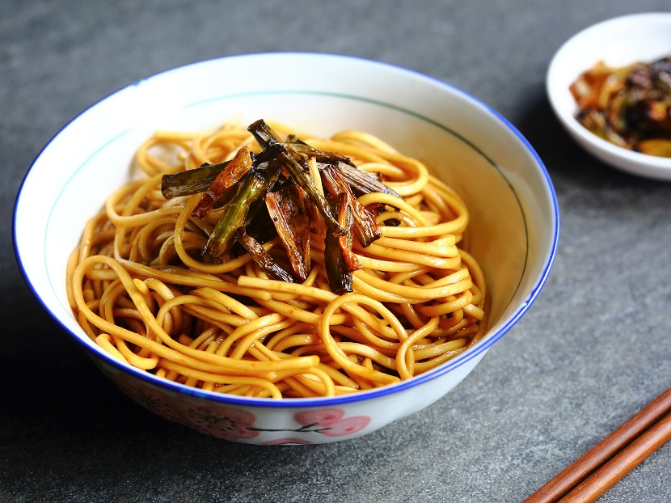

(click here to return to home page)
Shanghai Spring Onion Oil Noodles
(Simple but Delectable)
Prep Time: 2 minutesCook Time: 10 minutes

Ingredients:
- 4 tablespoon cooking oil
- 5 stalk spring onion, cut into long sections
- 2 tablespoon light soy sauce
- 2 tablespoon dark soy sauce
- 2 teaspoon sugar
- 400 g dried thin, round noodles
Instructions:
- Pour oil in a wok. Add spring onion. Leave to simmer over a medium low heat until it starts to brown. Take the onion out and set aside.
- Add soy sauce and sugar to the oil. Cook until the sauce starts to bubble. Turn off the heat.
- Meanwhile, bring a large pot of water to a boil. Cook noodles following the instructions on the package. Drain then briefly rinse under running water.
- Place noodles in the wok. Stir well to evenly coat the noodles with the sauce.
- Portion out the noodles into 4 serving bowls. Top with fried spring onion.